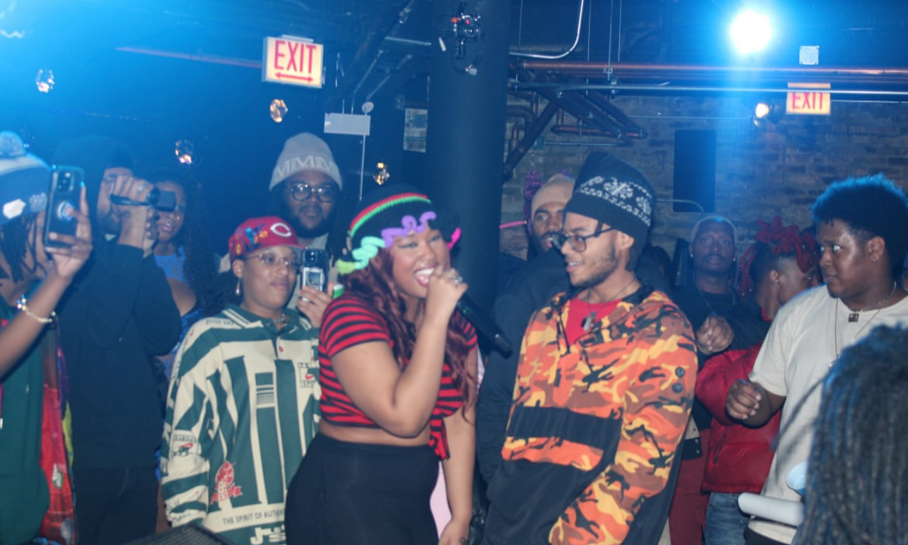

Her many disciplines include: music, song writing, rap, performing, marketing, visual storytelling. Extremely hands on with her own media whether its music videos, live performances, or cover art. Precision to the max playing hannah montana, both a artist and a creative director.
She describes her music as raw, emotional and intentional, blending hip hop with experimental and soulful elements. Pulling from underground and mainstream influences while lyrically conjuring from her personal truths: identity, healing, power, vulnerability. Pushing all the limits to make sure that those that can hear her can also feel her.
Performing for the first time in chicago was all it took to seal the deal for her. Previously already writing and recording before that but the reality of being on stage was so surreal making her nervous at first but once getting the mic in her hands and once the beat started the real movie started to play.
The energy from the crowd gave her a confidence she never felt before. Detailing the audience nodding their heads, cheering, actually listening. Right after getting off the stage she felt the rush like one she never felt before. That feeling was what made everything so real for her. That night showed her that performing and music wasnt a hobby anymore but a purpose.
Over time she grew to be more comfortable being vulnerable in her lyrics. Early on it was much harder to be open because she was writing from personas or sticking to surface level themes. Not wanting to show too much of herself fearing judgement or to be perceived as weak. As she grew as a person and as an artist she realized that the songs that connect the most with her audience were the songs where she told her truth. Even if it were messy or painful encouraging her to now fully lean into talking about heartbreak, self doubt, healing, and identity with more honesty. Despite how scary it may be at times she does it because its real and her fans love it.
Substance is lyrically her favorite (and you all know its mines as well) Can I raise the stakes (hard huh) Can I be something better than great Keep the fame, Im takin the acres Now it's mine, like I'm Alexander
She realized that she wanted to be hands on with her work when she saw how much power her visuals had to shape the story and energy of her music. She feels like no one could translate her vision better than herself. Right now steaming herself up to be a more confident, intentional, and multidimensional version of herself.
Her relationship with her emotions had shifted suppressed to fully expressing herself. In the past, she would either hold things in or try to make them palatable for others. Now her creativity is fully guided by her emotions, allowing them to be real, raw and messy. This transition allowed music to be a place where she could be honest without apology.
She lastly feels like she hopes that her work gives people permission to feel deeply, be loud about their healing, to take up space and to be complex. Esecially for black women and marginalized creatives. She wants to be a reminder that being soft and strong can be balanced perfectly and that their stories matter without needing to be filtered for others comfort.